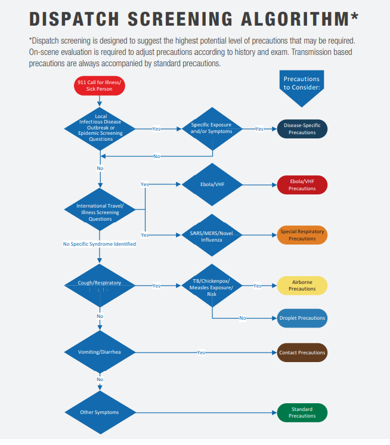

DISPATCH SCREENING ALGORITHM*
*Dispatch screening is designed to suggest the highest potential level of precautions that may be required.
On-scene evaluation is required to adjust precautions according to history and exam. Transmission based
precautions are always accompanied by standard precautions.

NOTES ON THE ALGORITHM:
• Basic travel and symptom screening suggests a level of precautions for responders. On-scene,
additional evaluation is required to determine if higher or lower levels of protection are required.
• If a medically trained dispatcher is not available, these questions may still be used. If the
dispatch agency declines to ask these questions, a process should be in place to refer the
caller to an emergency medical dispatcher (EMD) if possible or the crew may be able to
establish contact with the patient/caller via a callback number. EMS systems should tailor
these functions and adopt processes appropriate for their structure and staffing.
• Responders should be aware of infectious disease outbreaks or epidemics in their
community and, based on a doorway evaluation, be prepared to rapidly adopt appropriate
infection control precautions in accordance with established public health guidelines.
ADDITIONAL DISPATCH CONSIDERATIONS
The following information may be used to update/modify dispatch reference cards:
• Call taker obtains location (and phone number) and patient status information (e.g., age,
consciousness, breathing normally).
» Implement emergency medical dispatch to include giving the caller instructions to help
treat the patient until the responding EMS unit arrives per service protocols.
» Consider modifying assignment to ambulance only for calls involving suspect EVD/VHF or
Special Respiratory Precautions patients based on travel or exposure history (i.e., cancel first
responder unless unconscious, difficulty breathing, or other clear immediate life threat).
• Subsequent "Chief Complaint" information regarding type/severity of medical emergency:
» Chief complaint – If illness-related 911 call, additional screening questions include:
– Priority symptoms – severe bloody vomiting or diarrhea (e.g., large amounts of GI
blood loss), decreased level of consciousness, respiratory difficulty, chest pain
– Pertinent medical history - any known illness or exposures to Methicillin-resistant
Staphylococcus aureus (MRSA), tuberculosis (TB), Clostridium difficile (C. difficile),
norovirus, etc.
– Pertinent travel history - any travel within the previous 21 days
• For the following specific chief complaints ask additional questions (below) and provide
emergency medical dispatch instructions as indicated:
» Breathing problems
» Cardiac/respiratory arrest
» Chest pain » Convulsions/seizure
» Headache » Hemorrhage
» Sick person » Unconscious/Fainting (or Near)
» Unknown Problem (Person Down)
• Additional questions
» Is there anyone else there who is also sick?
» In the last day or two any:
– Fever or chills? − Vomiting or diarrhea?
– Severe cough? − Active bleeding?
For any positive questions, the emergency medical dispatcher will alert any first responders
and EMS providers being dispatched of potential for a patient with a communicable disease
and to implement infection control measures as indicated. This designation is preliminary
and responders may be able to adjust precautions based on further information from the
patient/family. If language barriers prevent questions, the dispatcher should advise the crew
that they cannot rule out an infectious patient.
Implement emerging infectious disease surveillance tool2 whenever a novel or dangerous
disease is endemic in specific areas.
--------------------------------------------------------
2 Examples: Emerging Infectious Disease Surveillance Tools (SRI/MERS/Ebola) and Identify, Isolate, Inform:
of Patients Who Present with Possible Ebola Virus Disease (Ebola) in the United States.
Content ©2020. All Rights Reserved.
Date last modified: April 12, 2020.
Created with SoftChalk
mobile page